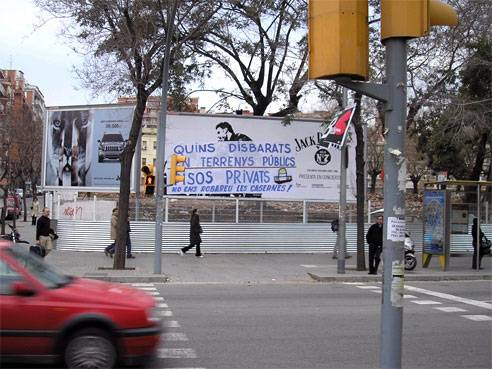

|
als
terrenys PÚBLICS tot PÚBLIC
|
|
|  |  |
dimecres 9 de febrer, quan fa dos anys que es va iniciar la campanya 'NO ens robareu les casernes'
"QUINS DISBARATS, EN TERRENYS PÚBLICS PISOS PRIVATS :: NO ENS ROBAREU LES CASERNES"
ho denuncien a la pàgina web d'Endavant de Sant Andreu de Palomar
|
NO
ENS ROBAREU LES CASERNES
l'últim terreny públic de Sant Andreu de Palomar |
|